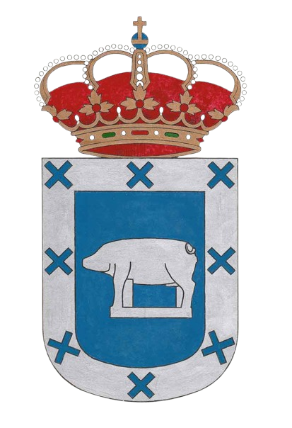

El Barraco es un municipio situado en la provincia de Ávila (Castilla y León, España), localizado al sureste de la provincia en la comarca natural del Valle del Alberche. La localidad principal está a 1.008 metros de altitud y el término municipal, de 153,9 km², incluye además los pequeños núcleos de Arroyo de la Parra, Las Cruceras y La Rinconada del Valle. El paisaje combina pastizales de montaña y pinares de la Sierra de la Paramera, contando al sur con el embalse de El Burguillo sobre el río Alberche (construido a principios del siglo XX para abastecimiento y regadío) y hacia el norte con la Reserva Natural Valle de Iruelas, una zona protegida de robledales, pinares y castañares donde habitan buitres leonados y otras rapaces.
La historia de El Barraco se remonta a la prehistoria: en sus inmediaciones se encuentran vestigios de la cultura vetona como la escultura de un verraco de piedra (figura de toro o jabalí) que constituye el emblema del municipio. Durante la época romana formó parte de la provincia de Lusitania, y tras el dominio musulmán fue incorporado a la Cristiandad en los reinos de León y Castilla. En la Edad Moderna se consolidó como villa abulense y en el siglo XIX contaba con algo más de mil habitantes según los primeros censos. A lo largo del tiempo ha mantenido un crecimiento paulatino, llegando en la actualidad a unos 2.000 habitantes en el municipio.
La población actual es de aproximadamente 2.027 vecinos (INE 2024), habiéndose mantenido estable en las últimas décadas alrededor de los 2.000 residentes. Se trata de un pueblo con baja densidad de población en el medio rural. La economía local ha dependido tradicionalmente del sector primario: la agricultura de secano (cereales y algún viñedo) y sobre todo la ganadería han sido las actividades principales. Destaca la cría de ganado caprino, con cooperativas y pequeñas industrias lácteas de elaboración de queso de cabra, así como huertas y explotaciones ganaderas en el entorno. También existen talleres artesanales relacionados con el trabajo de pieles (peletería) y en años recientes el turismo rural ha ganado importancia, aprovechando las rutas de senderismo y alojamientos en casas rurales de la zona.
Entre los elementos culturales y turísticos del municipio sobresalen varios monumentos históricos. En el pueblo destaca la iglesia parroquial de Nuestra Señora de la Asunción (siglo XVI) y la Casa Consistorial barroca del mismo siglo, con su balconada volada sobre la plaza principal. En las afueras se alza la ermita románica tardía de la Virgen de la Piedad, y se conservan restos del antiguo puente romano (Puente Nuevo) sobre el Alberche. En el entorno aparecen también ruinas de viejas aldeas medievales despobladas (como Avellaneda o Navalmulo). El patrimonio natural complementa lo cultural: el embalse de El Burguillo ofrece zonas recreativas y playas fluviales, mientras que la cercana Reserva de Iruelas atrae a visitantes interesados en sus bosques y aves.
Las tradiciones festivas de El Barraco incluyen varias celebraciones a lo largo del año. Destacan las fiestas patronales en honor al Santísimo Cristo de Gracia, que se celebran a mediados de septiembre con procesiones, verbenas y actividades populares. También se festejan las Candelas en febrero, una romería de San Marcos en abril y verbenas en verano a mediados de agosto. Además, el municipio es conocido por su tradición en el ciclismo: ha visto nacer corredores profesionales de renombre como Carlos Sastre (ganador del Tour de Francia 2008) o Ángel Arroyo, reflejando el orgullo local por este deporte. Estas características –su legado histórico, el entorno natural y las costumbres festivas– son rasgos destacados de El Barraco.
